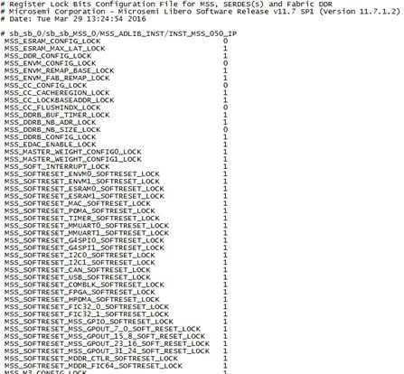

3.6 Implementing Designs
(Ask a Question)The following topics describe how to implement the design.
- Synthesis uses up to four cores when using Libero (only one Synplify Pro license is needed for four cores) if automatic or manual compile points are used.
- Place and Route uses up to four cores.
- Static timing analysis uses as many cores available.
3.6.1 Synthesize
(Ask a Question)- Run synthesis on your design with the default settings specified in the Synthesis tool: Double-click Synthesize.
- Run the Synthesis tool interactively: Right-click Synthesize and choose Open Interactively. If you open the tool interactively, you must complete synthesis from within the Synthesis tool.
The default Synthesis tool included with Libero SoC is SynplifyPro ME. If you want to use a different Synthesis tool, change the settings in Tool Profiles.
You can organize input synthesis source files using the Organize Source Files dialog box.
- Synthesis uses up to four cores when using Libero (only one Synplify Pro license is needed for four cores).
- Automatic or manual compile points.
- Place and Route uses up to four cores.
- Static timing analysis uses as many cores available.
3.6.1.1 Synthesize Options
(Ask a Question)You can set or change synthesis configuration options using the Synthesize Options dialog box in the Synthesis tool.
3.6.1.1.1 Active Implementation
(Ask a Question)| Option | Description |
|---|---|
| Synthesis Implementation | Click to specify the new implementation as a Synthesis Implementation. |
| Identify Implementation | Click to specify the new implementation as an Identify Implementation. |
| Implementation Name | Assign a name to the new Synthesis or Identify implementation. |
3.6.1.1.2 Global Nets (Promotions and Demotions)
(Ask a Question)Use the following options to specify the threshold value beyond which the Synthesis tool promotes the pins to globals:
| Option | Description |
|---|---|
| Minimum number of clock pins | Threshold value for Clock pin promotion. Default: 2 |
| Minimum number of asynchronous pins | Threshold value for Asynchronous pin promotion. Default: 800 |
| Minimum fanout of non-clock nets to be kept on globals | Threshold value for data pin promotion to global
resources. This value is the minimum fanout of non-clock (data) nets to
be kept on globals (no demotion). Range: 1000–200000 Default: 5000 |
| Number of global resources | Controls the number of Global resources you want to use in
your design. Default: 36 |
| Maximum number of global nets that could be demoted to row-globals | Maximum number of global nets that can be demoted to
row-globals. Range: 0–50 Default: 16 |
| Minimum fanout of global nets that could be demoted to row-globals | Minimum fanout of global nets that can be demoted to
row-global. It is undesirable to have high fanout nets demoted using row
globals because it can result in high skew. If you run out of global
routing resources for your design, reduce this number to allow more
globals to be demoted to Row Globals. Range: 25–5000 Default: 1000 |
| Infer Gated Clocks from Enable-registers | Enable this option to infer gated clocks from enable registers. This option is unchecked by default. Additional sub-options are as follows:
|
Detect Clock Domain Crossings | Enable this option to detect all clock domain crossings (CDC) in the RTL design that have paths either between two asynchronous clocks or two synchronous clocks but with a false path or max-delay constraint. For each crossing, analyze if the RTL design contains a control or data synchronizer circuit and report if it is considered "safe" according to the minimum requirements you specify below. The option is checked by default.
|
The generated CDC report will not contain any synchronizer circuits formed with macros
instantiated from the catalog. The generated report, with the name
<root_name>_cdc.csv, will be visible in the respective
Synthesis node of the report view (Design > Reports). The
report will contain all CDC inferred from the RTL design and explain the reason(s) why a
synchronizer is considered unsafe.
| Reason | Description |
|---|---|
| No synchronizer circuit detected |
|
| Number of register levels in synchronizer logic is less than the specified threshold. | Register levels in synchronizer logic are lower than a certain threshold value. |
| Combinational logic detected at clock domain crossing. | Combinational logic is present between the source register (start instance) and the destination register (end instance) at the crossover. |
| Divergence detected in the crossover path. | Source register (start instance) has fanout greater than 1 at the crossover. |
| Enable signal for synchronizer registers does not have a safe crossing. | Enable signal of data synchronizer does not have a safe synchronizer circuit. |
| Sources from different domains in fanin. | The destination is driven by multiple registers from different clock domains and are asynchronous to the destination register clock domain. |
| Synchronizer registers have synchronous reset or set as control signal. | The Synchronizer registers have a synchronous set or reset even if shared by all. This is tagged as unsafe since the reset logic can move to the data path instead of connecting to the reset port of the register and hence lead to metastability. |
3.6.1.1.3 Optimizations
(Ask a Question)The following table describes the Optimizations options.
| Option | Description |
|---|---|
| Enable retiming | Check to enable Retiming during synthesis. Retiming is the process of moving registers
(register balancing) across combinational gates automatically to improve
timing, while ensuring identical logic behavior. Default: Not checked (no retiming during synthesis) |
| Enable automatic compile point | Check to enable Automatic Compile Point during synthesis. Default: Checked (Automatic Compile Point enabled) |
| RAM optimized for | Guides the Synthesis tool to optimize RAMs to achieve your design goal.
|
| Map seq-shift register components to: | Maps sequential shift registers. Choices are:
|
| Map ROM components to: | Maps ROM components. Choices are:
|
3.6.1.1.4 Additional Options for SynplifyPro Synthesis
(Ask a Question)| Option | Description |
|---|---|
| Script File | Click the Browse () button to navigate to a Synplify Tcl file that contains the SynplifyPro-specific options. Libero passes the options in the Tcl file to SynplifyPro for processing. |
| Additional Options | Enter additional Synplify options. Place each option on a
separate line. Libero passes these additional options as-is to
SynplifyPro for processing, without checking syntax. These options
are set on the Active Implementation only. Note: Options from the
Additional Options Editor have priority over Tcl Script file
options if they are the same. |
Recommended Synthesis Tcl Options (PolarFire)
You can add or modify the following list of recommended Synthesis Tcl options in the Tcl Script File or Additional Options Editor.
set_option -use_fsm_explorer 0/1
set_option -frequency 200.000000
set_option -write_verilog 0/1
set_option -write_vhdl 0/1
set_option -resolve_multiple_driver 1/0
set_option -rw_check_on_ram 0/1
set_option -auto_constrain_io 0/1
set_option -run_prop_extract 1/0
set_option -default_enum_encoding default/onehot/sequential/gray
set_option -maxfan 30000
set_option -report_path 5000
set_option -update_models_cp 0/1
set_option -preserve_registers 1/0
set_option -continue_on_error 1/0
set_option -symbolic_fsm_compiler 1/0
set_option -compiler_compatible 0/1
set_option -resource_sharing 1/0
set_option -write_apr_constraint 1/0
set_option -dup 1/0
set_option -enable64bit 1/0
set_option -fanout_limit 50
set_option -frequency auto
set_option -hdl_define SLE_INIT=2
set_option -hdl_param -set "width=8"
set_option -looplimit 3000
set_option -fanout_guide 50
set_option -maxfan_hard 1/0
set_option -num_critical_paths 10
set_option -safe_case 0/1
Entering Additional Options (PolarFire)
Any additional options can be entered through the Script File or Additional Options Editor. All these options can be added and modified outside of Libero through interactive SynplifyPro.
Refer to the SynplifyPro Reference Manual for detailed information about the options and supported families. The following options are already set by Libero. Do not include them in the additional options field or Script File:
add_file <*>
impl <*>
project_folder <*>
add_folder <*>
constraint_file <*>
project <*>
project_file <*>
open_file <*>
set_option –part
set_option -package
set_option -speed_grade
set_option -top_module
set_option -technology
set_option -opcond
set_option -vlog_std
set_option -vhdl2008
set_option -disable_io_insertion
set_option -async_globalthreshold
set_option -clock_globalthreshold
set_option -globalthreshold
set_option -low_power_ram_decomp
set_option -retiming
set_option -automatic_compile_point
set_option -seqshift_to_uram
set_option -rom_map_logic
set_option -gclkint_threshold
set_option -rgclkint_threshold
set_option -low_power_gated_clock
set_option -report_preserve_cdc
set_option -min_cdc_sync_flopsRecommended Synthesis Tcl Options (SmartFusion 2, IGLOO 2, and RTG4)
set_option -use_fsm_explorer 0/1
set_option -frequency 200.000000
set_option -write_verilog 0/1
set_option -write_vhdl 0/1
set_option -resolve_multiple_driver 1/0
set_option -rw_check_on_ram 0/1
set_option -auto_constrain_io 0/1
set_option -run_prop_extract 1/0
set_option -default_enum_encoding default/onehot/sequential/gray
set_option -maxfan 30000
set_option -report_path 5000
set_option -update_models_cp 0/1
set_option -preserve_registers 1/0
set_option -continue_on_error 1/0
set_option -symbolic_fsm_compiler 1/0
set_option -compiler_compatible 0/1
set_option -resource_sharing 1/0
set_option -write_apr_constraint 1/0
set_option -dup 1/0
set_option -enable64bit 1/0
set_option -fanout_limit 50
set_option -frequency auto
set_option -hdl_define SLE_INIT=2
set_option -hdl_param -set "width=8"
set_option -looplimit 3000
set_option -fanout_guide 50
set_option -maxfan_hard 1/0
set_option -num_critical_paths 10
set_option -safe_case 0/1
Entering Additional Options (SmartFusion 2, IGLOO 2, and RTG4)
Any additional options can be entered through the Script File or Additional Options Editor. All these options can be added and modified outside of Libero through interactive SynplifyPro.
Refer to the SynplifyPro Reference Manual for detailed information about the options and supported families. The following options are already set by Libero. Do not include them in the additional options field or Script File:
add_file <*>
impl <*>
project_folder <*>
add_folder <*>
constraint_file <*>
project <*>
project_file <*>
open_file <*>
set_option –part
set_option -package
set_option -speed_grade
set_option -top_module
set_option -technology
set_option -opcond
set_option -vlog_std
set_option -vhdl2008
set_option -disable_io_insertion
set_option -async_globalthreshold
set_option -clock_globalthreshold
set_option -globalthreshold
set_option -low_power_ram_decomp
set_option -retiming3.6.1.2 SynplifyPro ME
(Ask a Question)SynplifyPro ME is the default Synthesis tool for Libero SoC.
To run synthesis using SynplifyPro ME and its default settings, right-click Synthesize and choose Run.
For custom settings, use the following procedure to run Synplify interactively.
- If Synplify is your default Synthesis tool, right-click Synthesize in the Libero SoC Design Flow window and choose Open Interactively. Synplify starts and loads the appropriate design files with preset default values.
- From Synplify’s Project menu, choose Implementation Options.
- Set your specifications and click OK.
- Deactivate synthesis of the defparam statement. The defparam statement is only for simulation tools and is not intended for synthesis. Embed the defparam statement between the translate_on and translate_off synthesis directives:
/* synthesis translate_off */ defparam M0.MEMORYFILE = "meminit.dat" /*synthesis translate_on */ // rest of the code for synthesis - Click the Run button. Synplify compiles and synthesizes the design into an HDL netlist. The resulting
*.vmfiles appear under Synthesis Files in the Files list.If errors appear after you click the Run button, use the Synplify editor to edit the file. Double-click the file name in the Synplify window showing the loaded design files. Your changes are saved to the original design file in your project.
- To close Synplify, from the File menu, choose Exit. When prompted to save changes you made, click Yes.Note: For a list of attributes related to Microchip devices, see the Microchip Attribute and Directive Summary in the Synplify online help.Note: To add a clock constraint in Synplify, add n:<net_name> in your SDC file. If you omit the n:, the constraint will not be added.
3.6.1.3 Identifying Debug Designs
(Ask a Question)Libero SoC integrates the Identify RTL debugger tool. Identify debugging software allows you to probe and debug your FPGA design directly in the source RTL. Use the software if the design behavior after programming is not in accordance with the simulation results.
The following list summarizes the Identify key features:
- Instrument and debug your FPGA directly from RTL source code.
- Internal design visibility at full speed.
- Incremental iteration permit design changes made to the device from the Identify environment using incremental compile operations. This allows you to iterate in a fraction of the time it takes route the entire device.
- Debug and display results allow you to collect only the data you need using unique and complex triggering mechanisms.
To open the Identify RTL debugger, in the Design Flow window, under Debug Design, double-click Instrument Design.
The following procedure describes how to use the Identify Instrumentor and Debugger. To run the following debugging flow, you must have the Identify RTL Debugger and the Identify Instrumentor.
- Create your source file and run pre-synthesis simulation.
- Optional: Perform an entire flow (Synthesis - Compile - Place and Route - Generate a Programming File) without starting Identify.
- Right-click Synthesize and choose Open Interactively in Libero SoC to launch Synplify.
- In Synplify, click Options > Configure Identify Launch to setup Identify.
- In Synplify, create an Identify implementation by clicking Project > New Identify Implementation.
- In the Implementations Options dialog
box, make sure that the Implementation Results > Results
Directory points to a location under
<libero project>\synthesis\; otherwise, Libero SoC will not detect your resulting Verilog Netlist file. - From the Instrumentor UI, specify the sample clock, the breakpoints, and other signals to probe. Synplify creates a new synthesis implementation. Synthesize the design.
- In Libero SoC, run Synthesis, Place
and Route and generate a programming file.Note: Libero SoC works from the edit netlist of the current active implementation, which is the implementation you created in Synplify for Identify debug.
- In the Design Flow window, double-click Identify Debug Design to launch the Identify Debugger.
To work properly, the Identify RTL Debugger, Synplify, and FlashPro must be synchronized. For more information about which versions of the tools work together, see the Release Notes.
3.6.2 Verifying Post-Synthesized Designs
(Ask a Question)The following sections describe how to verify designs after they are synthesized.
3.6.2.1 Generating Simulation Files
(Ask a Question)- The post-synthesis Verilog netlist file ends with a
*.vextension. - The VHDL netlist file ends with a
*.vhdextension.
3.6.2.2 Verifying Post-Synthesis Implementations - Simulate
(Ask a Question)- Perform functional simulation before Place and Route to simulate the functionality of the logic in the design.
- Perform timing simulation after the design completes Place and Route. This simulation uses timing information based on the delays in the Place and Route designs.
To perform functional simulation:
- Back-annotate your design and create your testbench.
- In the Design Flow window, click Implement Design.
- Right-click
Simulate and choose Organize Input Files >
Organize Stimulus Files.
In the Organize Files for Source dialog box, all stimulus files in the current project appear in Source Files in the Project list box. Files associated with the block appear in the Associated Source Files list box.
In most cases, you will have one testbench associated with your block. However, if you want simultaneous association of multiple testbench files for one simulation session, as in the case of PCI cores, add multiple files to the Associated Source Files list. - To add a testbench, select the testbench you want to associate with the block in the Source Files in the Project list box and click Add to add it to the Associated Source Files list.
- To remove a testbench or change the files in the Associated Source Files list box, select the files and click Remove.
- To order testbenches, use the up and down arrows to define the order in which you want the testbenches compiled. The top level-entity must be at the bottom of the list.
- When you are satisfied with the Associated Simulation Files list, click OK.
- To start ModelSim ME, right-click Simulate in the Design Hierarchy window and choose Open Interactively. ModelSim starts and compiles the appropriate source files. When the compilation completes, the simulator runs for 1ps and the Wave window shows the simulation results.
- Scroll in the Wave window to verify the logic works as intended. Use the cursor and zoom buttons to zoom in, zoom out, and measure timing delays.
- When you are done, click Quit from the File menu.
3.6.3 Compile Netlist
(Ask a Question)Compile contains functions that perform legality checking and basic netlist optimization. Compile checks for netlist errors (bad connections and fan-out problems) removes unused logic (gobbling) and combines functions to reduce logic count and improve performance. Compile also verifies that your selected device has sufficient resources to fit the design.
The Compile Netlist step appears in the Design Flow window after unchecking the Enable Synthesis option in the Project > Project Settings > Design Flow page. This option appears after importing or linking your HDL Netlist files into the project and building the design hierarchy.
To compile your device with default settings, right-click Compile Netlist in the Design Flow window and choose Run or double-click Compile Netlist.
To compile your design with custom settings, right-click Compile Netlist in the Design Flow window and choose Configure Options.
During compile, the Log window shows information about your design, including warnings and errors. Libero SoC issues warnings when your design violates recommended Microchip design rules. Microchip recommends that you address all warnings, if possible, by modifying your design before you continue.
If the design fails to compile due to errors, modify the design to remove the errors and re-Compile.

| Option | Description |
|---|---|
| Number of global resources |
Number of available global resources for the die. |
| Maximum Number of global nets that could be demoted to row-globals |
Maximum number of global nets that can be demoted to row-globals. Default: 16 |
| Minimum fanout of global nets that could be demoted to row-globals |
Minimum fanout of global nets that can be demoted to row-global. If you run out of global routing resources for your design, reduce this number to allow more globals to be demoted or select a larger die for your design. Default: 1000 |
| Minimum fanout of non-clock nets to be kept on globals |
Minimum fanout of non-clock (data) nets to be kept on globals (no demotion). If you run out of global routing resources for your design, increase this number. Range: 1000–200000 Default: 5000 |
3.6.4 Configure Flash*Freeze (SmartFusion 2 and IGLOO 2)
(Ask a Question)SmartFusion 2 SoC and IGLOO 2 FPGAs support Flash*Freeze technology for implementing low-power solutions.
Flash*Freeze mode is an ultra-low power static mode with the lowest standby power of 1.92 mW. It allows easy entry and exit from ultra-low power static mode while retaining SRAM content, I/O state, and register data, significantly reducing power.
For more information about Flash*Freeze mode, see the SmartFusion2 and IGLOO2 FPGA Low-Power Design User Guide .
Fabric SRAMs — both the Large SRAM (LSRAM) instances of RAM1xK18 and the Micro SRAM (μSRAM) instances of RAM64x18 — can be placed into Suspend mode or Sleep mode. These SRAMs are grouped in rows in Libero SoC devices.
3.6.4.1 uRAM/LSRAM State
(Ask a Question)The following table describes the uRAM/LSRAM State options.
| Option | Description |
|---|---|
| Sleep | Selects Sleep mode. LSRAM and uSRAM contents are not retained. |
| Suspend | Selects Suspend mode. LSRAM and uSRAM contents are retained. |
3.6.4.2 MSS Clock Source
(Ask a Question)The lower the frequency, the lower the power. However, some peripherals, such as SPI or MMUART, can remain active. In these cases, you might need a higher MSS clock frequency (for example, to meet the baud rate for MMUART).
| Option | Description |
|---|---|
| On-Chip 1 MHz RC Oscillator | Uses the on-chip 1 MHz RC oscillator block. |
| On-Chip 50 MHz RC Oscillator | Uses the on-chip 50 MHz RC oscillator block. |
3.6.5 Configure Register Lock Bits
(Ask a Question)For SmartFusion 2, IGLOO 2, and RTG4 devices, use the Register Lock Bits Configuration
tool to lock MSS, SERDES, and FDDR configuration registers to prevent them from being
overwritten by initiators that access these registers. The register lock bits are set in
a text file (*.txt) and imported into a SmartFusion 2/IGLOO 2
project.
- From the Design Flow window, click Configure Register Lock
Bits to display the Register Lock Bits Setting dialog box.
Figure 3-82. Register Lock Bits Settings Dialog Box 
- Click the Browse button to navigate to a text
(
*.txt) file that contains the Register Lock Bit settings.
3.6.5.1 Register Lock Bit Text File Template
(Ask a Question)An initial Configuration Lock Bit file can be generated from the Design Flow window by clicking Generate FPGA Array Data.
The initial (default) file is named
<proj_location>/designer/<root>/<root>_init_config_lock_bits.txt.
Edit this file to ensure that the lock bits are set to “0” for all register bits you
want to lock. After editing the file, save it as a *.txt file with a
different name, and then import the file into the project using the Register Lock Bit
Settings dialog box (Design Flow window > Configure Register Lock
Bits).
3.6.5.2 Register Lock Bit File Syntax
(Ask a Question)A valid entry in the Lock Bit Configuration file is defined as a <lock_parameters> < lock bit value> pair.
- If the lock bit is for a register, the parameter name is defined as:
<Physical block name>_<register name>_LOCK - If the lock bit is for a field, the parameter name is defined as:
<Physical block name>_<register name>_<field name>_LOCK
The physical block name can vary with device family and device (see the following table).
| Family | Name |
|---|---|
| SmarftFusion 2 and IGLOO 2 devices |
|
| RTG4 devices |
|
Setting the lock bit value to ‘1’ indicates that the register can be written. Setting it to “0” indicates that the register cannot be written (locked). Lines starting with “#” or “;” are comments. Empty lines are permitted in the Lock Bit Configuration file.

3.6.5.3 Validating the Register Lock Bits Configuration File
(Ask a Question)During Map File generation (Design Flow window > Generate FPGA Array Data), Libero SoC validates the Register Lock Bit Configuration file and displays the following error messages if it encounters an issue.
| Error Message | Description |
|---|---|
| Error: Invalid parameter name ‘<param>’ while reading register lock bits configuration file <file name> | Libero SoC found an invalid parameter name in the file specified. |
| Error: Invalid value ‘<value>’ for parameter ‘<param>’ while reading register lock bits configuration file <file name> | Libero SoC found an invalid parameter value in the file specified. |
| Error: Parameter ‘<param>’ cannot be set to '1', while reading register lock bits configuration file <file name> | The value of SERDES register fields *K_BRIDGE_SPEED is set by the SERDES Configurator to “0” and cannot be changed. It is illegal to change the value to “1”. |
| Error: Parameter ‘<param>’ cannot be set to '1', while reading register lock bits configuration file <file name> | The value of SERDES register fields *K_BRIDGE_SPEED is set by the SERDES Configurator to “0” and cannot be changed. It is illegal to change the value to “1”. |
3.6.6 Constraint Flow in Implementation
(Ask a Question)3.6.6.1 Design State Invalidation
(Ask a Question)The Libero SoC Design Flow window displays status icons to indicate the status of the design state. For any status other than a successful run, the status icon is identified with a tooltip to give you additional information.
| Status Icon | Tooltip | Description | Possible Causes/Remedy |
|---|---|---|---|
|
N/A |
Tool has not run yet. |
NEW state. |
Tool has not run or it has been cleaned. |
|
Tool runs successfully. |
Tool runs with no errors. PASS state. |
N/A |
|
| Tool forced by user to complete state. | Force updates the tools state to PASS state. | Only for Synthesize/Compile and Place and Route tools. The remaining tools do not change states | |
|
Varies with the tool. |
Tool runs but with Warnings. |
Varies with the tool (For example, for the Compile Netlist step, not all I/Os are assigned and locked). |
|
|
Tool Fails. |
Tool fails to run. |
Invalid command options or switches, invalid design objects, invalid design constraints. |
|
|
Design State is Out of Date. |
Tool state changes from PASS to OUT OF DATE. |
Since the last successful run, design source design files, constraint files or constraint file/tool association, constraint files order, tool options, and/or project settings have changed. |
|
|
Timing Constraints have not been met. |
Timing Verification runs successfully but the design fails to meet timing requirements. |
Design fails Timing Analysis. Design has either set-up or hold time violations or both. See PolarFire FPGA Timing Constraints User Guide on how to resolve the timing violations. |
3.6.6.2 Constraints and Design Invalidation
(Ask a Question)A tool in the Design Flow changes from a PASS state (green check mark) to an OUT OF DATE state when a source file or setting affecting the outcome of that tool has changed.
The out-of-date design state is identified by the icon in the Design Flow window. Sources and/or settings are defined as:
- HDL sources (for Synthesis), gate level netlist (for Compile), and Smart Design components
- Design Blocks (
*.cxzfiles) – low-level design units that might have completed Place and Route and re-used as components in a higher level design - Constraint files associated with a tool
- Upstream tools in the Design Flow:
- If the tool state of a Design Flow tool changes from PASS to OUT OF DATE, the tool states of all the tools below it in the Design Flow, if already run and are in PASS state, also change to OUT OF DATE with appropriate tooltips. For example, if the Synthesis tool state changes from PASS to OUT OF DATE, the tool states of Place and Route tool as well as all the tools below it in the Design Flow change to OUT OF DATE.
- If a Design Flow tool is CLEANED, the tool states of all the tools below it in the Design Flow, if already run, change from PASS to OUT OF DATE.
- If a Design Flow tool is rerun, the tool states of all the tools below it in the Design Flow, if already run, are CLEANED.
- Tool Options
- If the configuration options of a Design Flow tool (right-click the tool and choose Configure Options) are modified, the tool states of that tool and all the other tools below it in the Design Flow, if already run, are changed to OUT OF DATE with appropriate tooltips.
- Project Settings:
- Device selection
- Device settings
- Design Flow
- Analysis operating conditions
- If the tool state of a Design Flow tool changes from PASS to OUT OF DATE, the tool states of all the tools below it in the Design Flow, if already run and are in PASS state, also change to OUT OF DATE with appropriate tooltips. For example, if the Synthesis tool state changes from PASS to OUT OF DATE, the tool states of Place and Route tool as well as all the tools below it in the Design Flow change to OUT OF DATE.
| Setting Changed | Note | Design Flow Tools Affected | New State of the Affected Design Flow Tools |
|---|---|---|---|
Die | Part# is changed | All | CLEANED/NEW |
Package | Part# is changed | All | CLEANED/NEW |
Speed | Part# is changed | All | CLEANED/NEW |
Core Voltage | Part# is changed | All | CLEANED/NEW |
Range | Part# is changed | All | CLEANED/NEW |
Default I/O Technology | Synthesize, and all tools below it. | OUT OF DATE | |
Reserve Pins for Probes | Place and Route, and all tools below it. | OUT OF DATE | |
PLL Supply Voltage (V) | Verify Power, Generate FPGA Array Data and all other “Program and Debug Design” tools below it. | OUT OF DATE | |
Power On Reset Delay | Generate FPGA Array Data and all other “Program and Debug Design” tools below it. | OUT OF DATE | |
System controller suspended mode | Generate FPGA Array Data and all other “Program and Debug Design” tools below it. | OUT OF DATE | |
Preferred Language | None | N/A | |
Enable synthesis | All | OUT OF DATE | |
Synthesis gate level netlist format | Synthesize | CLEANED/NEW | |
Reports (Maximum number of high fanout nets to be displayed) | None | N/A | |
Abort flow if errors are found in PDC | None | N/A | |
Abort flow if errors are found in SDC | None | N/A | |
Temperature range (C) | Verify Timing, Verify Power | OUT OF DATE | |
Core voltage range (V) | Verify Timing, Verify Power | OUT OF DATE | |
| Default I/O voltage range |
Verify Timing, Verify Power |
OUT OF DATE |
3.6.6.3 Check Constraints
(Ask a Question)When a constraint file is checked, the Constraint Checker does the following:
- Checks the syntax
- Compares the design objects (pins, cells, nets, ports) in the constraint file versus the design objects in the netlist (RTL or post-layout ADL netlist). Any discrepancy (For example, constraints on a design object which does not exist in the netlist) are flagged as errors and reported in the *_sdc.log file.
3.6.6.4 Design State and Constraints Check
(Ask a Question)Constraints can be checked only when the design is in the right state.
| Constraint Type | Check for Tools | Required Design State Before Checking | Netlist Used for Design Objects Checks | Check Result |
|---|---|---|---|---|
|
I/O Constraints |
Place and Route |
Post-Synthesis |
ADL Netlist |
Reported in Libero Log Window |
|
Floorplanning Constraints |
Place and Route |
Post-Synthesis |
ADL Netlist |
par_sdc.log |
|
Timing Constraints |
Synthesis |
Pre-Synthesis |
RTL Netlist |
synthesis_sdc.l og |
|
Place and Route |
Post-Synthesis |
ADL Netlist |
par_sdc.log |
|
|
Timing Verification |
Post-Synthesis |
ADL Netlist |
vt_sdc.log |
|
|
Netlist Attributes |
FDC Check |
Pre-Synthesis |
RTL Netlist |
Libero Message Window |
|
Netlist Attributes |
NDC Check |
Pre-Synthesis |
RTL Netlist |
Reported in Libero Log Window |
3.6.6.5 Edit Constraints
(Ask a Question)Click the Edit with I/O Editor/Chip Planner/Constraint Editor button to edit existing and add new constraints. Except for the Netlist Attribute constraints (*.fdc and *.ndc) file, which cannot be edited by an interactive tool, all other constraint types can be edited with an Interactive Tool. The *.fdc and *.ndc files can be edited using the Libero SoC Text Editor.
- The I/O Editor is the interactive tool to edit I/O Attributes, Chip Planner is the interactive tool to edit Floorplanning Constraints, and the Constraint Editor is the interactive tool to edit Timing Constraints.
- For Timing Constraints that can be associated to Synthesis, Place and Route, and
Timing Verification, you need to specify which group of constraint files you want
the Constraint Editor to read and edit:
- Edit Synthesis Constraints - reads associated Synthesis constraints to edit.
- Edit Place and Route Constraints - reads only the Place and Route associated constraints.
- Edit Timing Verification Constraints - reads only the Timing Verification associated constraints.
For the three SDC constraints files (a.sdc, b.sdc, and c.sdc, each with Tool Association as shown in the following table) when the Constraint Editor opens, it reads the SDC file based on your selection and the constraint file/tool association.
Synthesis |
Place and Route |
Timing Verification |
|
|---|---|---|---|
a.sdc |
— | X |
X |
b.sdc |
X |
X |
— |
c.sdc [target] |
X |
X |
X |
- Edit Synthesis Constraints reads only the b.sdc and c.sdc when Constraint Editor opens.
- Edit Place and Route Constraints reads a.sdc, b.sdc, and c.sdc when Constraint Editor opens.
- Edit Timing Verification Constraints reads a.sdc and c.sdc when Constraint Editor opens.
Constraints in the SDC constraint file that are read by the Constraint Editor and subsequently modified by you will be written back to the SDC file when you save the edits and close the Constraint Editor.
When you add a new SDC constraint in the Constraint Editor, the new constraint is added to the c.sdc file, because it is set as target. If no file is set as target, Libero SoC creates a new SDC file to store the new constraint.
3.6.6.6 Constraint Type and Interactive Tool
(Ask a Question)|
Constraint Type |
Interactive Tool for Editing |
Design Tool the Constraints File is Associated |
Required Design State Before Interactive Tool Opens for Edit |
|---|---|---|---|
|
I/O Constraints |
I/O Editor |
Place and Route Tool |
Post-Synthesis |
|
Floorplanning Constraints |
Chip Planner |
Place and Route Tool |
Post-Synthesis |
|
Timing Constraints |
SmartTime Constraints Editor |
Synthesis Tool Place and Route Timing Verification |
Pre-Synthesis Post-Synthesis Post-Synthesis |
|
Netlist Attributes Synplify Netlist Constraint (*.fdc) |
Interactive Tool Not Available Open the Text Editor to edit. |
Synthesis |
Pre-Synthesis |
|
Netlist Attributes Compile Netlist Constraint (*.ndc) |
Interactive Tool Not Available Open the Text Editor to edit. |
Synthesis |
Pre-Synthesis |

3.6.7 Place and Route
(Ask a Question)Double-click Place and Route to run Place and Route on your design with the default settings.
3.6.7.1 Place and Route Options
(Ask a Question)| Option | Description |
|---|---|
| Timing-Driven | Timing-driven Place and Route strives to meet timing constraints
specified by you or generated automatically. Timing-driven Place and
Route delivers better performance than Standard Place and
Route. If you do not select this option, Libero SoC ignores timing constraints, although timing reports based on timing constraints can still be generated for the design. |
| Power-Driven | This option is available when Timing-Driven is checked. This option runs the Power-Driven layout. This layout reduces dynamic power while still maintaining timing constraints. |
| I/O Register Combining | This option is available when Timing-Driven is checked. This option combines any register directly connected to an I/O when it has a timing Constraint. If multiple registers are directly connected to a bi-directional I/O, select one register to combine in the following order: input-data, output-data, output-enable. |
| Global Pins Demotion | This option is available when Timing-Driven is checked. This
option allows the layout tool to select the most timing critical
pins on any Global network and moves them to the source that drives
the Global resource (proactively attempts to improve timing by
putting timing-critical pins onto routed resources). If the driver for the global is a fabric register, the driver is replicated and the duplicate names are printed. Each set of names must be used in place of the original register in any specified timing constraint. |
| Driver Replication | This option is available when Timing-Driven is checked. This option allows an algorithm to replicate critical net drivers to reduce timing violations. The algorithm prints the list of registers along with the duplicate names. Each set of names must be used in place of the original register in any specified timing constraint. |
| High Effort Layout | This option is available when Timing-Driven is checked. This option improves layout success, but increases layout runtime and can impact timing performance. |
| Repair Minimum Delay Violations | This option is available when Timing-Driven is checked. This
option repairs Minimum Delay violations (Timing-Driven Place and
Route option enabled) and performs an additional route. This is done
by increasing the length of routing paths and inserting routing
buffers to add delay to the top violating paths. If this option is enabled, the programmable delays through I/Os are adjusted to meet hold time requirements from input to registers. For register-to-register paths, buffers are inserted. The Repair tool analyzes paths iteratively with negative minimum delay slacks (hold time violations) and chooses suitable connections and locations to insert buffers. Not all paths can be repaired using this technique, but many common cases will benefit. Even when this option is enabled, it will not
repair a connection or path that:
Typically, this option is enabled with the Incremental Layout option when a design’s maximum delay requirements are satisfied. Every effort is made to avoid creating max-delay timing violations on worst case paths. Min Delay Repair generates a report in the implementation directory that lists all the paths that were considered. If your design continues to have internal hold time violations, rerun repair Minimum Delay Violations with Incremental Layout to analyze additional paths. |
| Incremental Layout |
Uses previous placement data as the initial placement for the next run. To preserve portions of your design, use Compile Points, which are RTL partitions of the design that you define before synthesis. The Synthesis tool treats each Compile Point as a block that allows you to preserve its structure and timing characteristics. By executing Layout in Incremental Mode, locations of previously placed cells and the routing of previously routed nets is preserved. Compile Points makes it easy to mark portions of a design as black boxes, and let you divide the design effort between designers or teams. For more information, see the Synopsys FPGA Synthesis Pro ME User Guide. |
| Use Multiple Pass | Runs multiple passes of Place and Route to achieve the best layout result. Click Configure to specify the criteria you want to use to determine the best layout result. |
| Block Creation | This option is available only when the Block Creation option is turned on (Project > Project Settings > Design Flow > Enable Block Creation). The value entered here limits the number of row-global resources available in every row-global region of the device. During Place and Route of the block, the tool will not exceed this capacity on any row-global region. The default value is the maximum number of row-globals. If you enter a value lower than the maximum capacity (the default), the layout of the block can integrate with the rest of the design if it consumes the remaining row-global capacity. |
3.6.8 Multiple Pass Layout Configuration
(Ask a Question)Multiple Pass Layout attempts to improve layout quality by selecting results from a few number of Layout passes. This is done by running individual place and route multiple times with varying placement seeds and measuring the best results for the specified criteria.
When using Multiple Pass Layout, observe the following guidelines:
- Multiple Pass Layout saves your design file with the pass that has the best layout results. If you want to preserve your existing design state, you must save your design file with a different name before proceeding. To do this, select File > Save As.
- The following reports for each pass are written
to the working directory to assist you in later
analysis: timing, maximum delay timing violations,
minimum delay timing violations, and power.
<root_module_name>_timing_r<runNum>_s<seedIndex>.rpt<root_module_name>_timing_violations_r<runNum>_s<seedIndex>.rpt<root_module_name>_timing_violations_min_r<runNum>_s<seedIndex>.rpt<root_module_name>_power_r<runNum>_s<seedIndex>.rpt<root_module_name>_iteration_summary.rptprovides additional details about the saved files.
To configure multiple pass options:
- When running Layout, select the UI control in the Layout Options dialog box.
- Click Configure. The Multi-Pass Configuration dialog box appears.
Figure 3-87. Multi-Pass Configuration Dialog Box - Set the options in the following table and click OK.
| Option | Description |
|---|---|
| Number of passes | Number of passes (iterations) using the slider. 1 is the minimum and 25 is the maximum. Default: 5 |
| Start at seed index | Index into the array of random seeds that is the starting point for the passes. If not specified, the default behavior is to continue from the last seed index that was used. |
| Measurement | Measurement criteria against which you want to compare layout results. |
| Slowest clock | Uses the slowest clock frequency in the design in each pass as the performance reference for the layout pass. |
| Specific clock | Uses a specific clock frequency as the performance reference for all layout passes. |
| Timing violations | Timing Violations to use the pass that best meets the slack or timing-violations constraints. This is the default. Note: You must enter your own timing constraints through SmartTime or SDC. |
| Maximum delay | Examines timing violations (slacks) obtained from maximum delay analysis. This is the default. |
| Minimum delay | Examines timing violations (slacks) obtained from minimum delay analysis. |
| Select by | Slack criteria. Choices are:
|
| Total power | Determines the best pass to be the one that has the lowest total power (static + dynamic) of all layout passes. |
3.6.8.1 Iteration Summary Report
(Ask a Question)<root_module>_iteration_summary.rpt records a summary of
whether the multiple pass run was started through the GUI or the
extended_run_lib Tcl script, with arguments for repeating each run.
Each new run appears with its own header in the Iteration Summary Report along with the
fields RUN_NUMBER and INVOKED AS, followed by a table
containing Seed Index, corresponding Seed value, Comparison data, Report Analyzed, and
Saved Design information.3.6.9 Post Layout Editing of I/O Signal Integrity and Delay Parameters
(Ask a Question)The Edit Post Layout Design tool in the Design Flow allows you to tune I/O signal integrity parameters and external timing without executing Place and Route again.
Input is provided using a PDC file. From the Libero user interface, double-click Edit
Post Layout Design to open a file selection dialog box and select the
input file. In the batch flow, you can issue the command edit_post_layout_design
<input.pdc>.
edit_ioedit_instance_delay
To assist you in knowing those instances on which this tool can update delays, the
Place-and-Route tool generates a <root>_delayinstance.rpt report
file. This report has an editable (Editable?) column with
Yes and No values that indicate
whether a delay parameter can be edited by this tool.
The batch command edit_post_layout_design fails when any commands in the input PDC file fail. The PDC commands fail if the syntax is incorrect, the referenced instances do not exist, or the values are out of legal ranges. If the batch command fails, the layout state of the design does not change. If the batch command succeeds:
Layout state changes to reflect the values in the PDC commands.
Pin report and delay instance report files are regenerated to reflect the latest values.
Downstream tools Verify Timing, Verify Power, Generate FPGA Array Data, and Generate Back Annotated Files are invalidated.
The batch command edit_post_layout_design generates the log file
<project>/designer/<root>/top_editpostlayout_log.log to
provide information about the run and which PDC file was used in the run. This log gets
appended with information from each run of the command. Each run’s start message is
prefixed by the time when the run is executed. The log file can be viewed from the
Reports tab (Design > Reports). The log file is removed when Place and Route is run
or cleaned.
In the following figure, downstream steps this tool invalidates are highlighted in yellow.
3.6.10 Resource Usage
(Ask a Question)After layout, you can check the resource usage of your design.
- From the Design menu, choose Design > Reports.
- Click <design_name>_layout_log.log to open the log file.
The log file contains a Resource Usage report that lists the type and percentage of resource used for each resource type relative to the total resources available for the chip.
| Type | Used | Total | Percentage |
|---|---|---|---|
4LUT |
400 |
86184 |
0.46 |
DFF |
300 |
86184 |
0.34 |
I/O Register |
0 |
795 |
0.00 |
| Logic Element | 473 | 86184 | 0.55 |
4LUTs are 4-input Look-up Tables that can implement any combinational logic functions with up to four inputs.
The Logic Element (LE) is a logic unit in the fabric. It might contain a 4LUT, a DFF, or both. The number of LEs in the report includes all LEs, regardless of whether they contain 4LUT only, DFF only, or both.
3.6.10.1 Overlapping of Resource Reporting
(Ask a Question)The number of 4LUTs in the report is the total number used for your design, regardless of whether they are combined with the DFFs. Similarly, the number of DFFs in the report is the total number used for your design, regardless of whether they are combined with 4LUT’s.
In the following report, a total of 473 LEs are used for the design.
- 300 of the 473 LEs have DFFs inside, which means 173 (473-300) of them have no DFFs in them. These 173 LEs use only the 4LUTs portion of the LE.
- 400 of the 473 LEs have 4LUTs inside, which means 73 (473-400) of them have no 4LUTS in them. These 73 LEs use only the DFF portion of the LE.
| Logical Element Description | Calculated Logical Elements |
|---|---|
LEs using DFF Only = 473-400 = | 73 |
LEs using 4LUTS only = 473-300= | 173 |
= | 246 (Total of LEs using 4LUTS ONLY or DFF ONLY) |
Report’s Overlapped resource = | 227 (LEs using both 4LUTS and DFF) |
Total number of LEs used = | 473 |
In the following figure, the area where the two circles overlap represents the overlapped resources in the Resource Usage report.
3.6.11 Global Net Report
(Ask a Question)The Global Net Report displays all the nets that use the global routing resources of the device. This report is generated after the Place and Route step and is available in XML format in the Reports tab (Libero SoC > Design>Reports > <design_name>_glb_net_report.xml).
The global routing resources in Microchip FPGA devices offer a low-skew network for effective distribution of high fanout nets including clock signals. Global routing resources include the following:
- Fabric CCC
- Global Buffers (GB)
- Row Global Buffers (RGB)
Figure 3-91. Global Net Report 
The following topics describe the sections in the Global Net Report.
3.6.11.1 Global Nets Information
(Ask a Question)3.6.11.2 I/O to GB Connections
(Ask a Question)| Column | Description |
|---|---|
| I/O Function | I/O connection details, such as the bank name, any hardwired GB or
hardwired CCC connections, and any dedicated SERDES/DDR connections.
|
| Net Type | Routed or hardwired:
|
3.6.11.3 Fabric to GB Connections
(Ask a Question)The Fabric to GB Connections section lists all the nets originating from the fabric to the Global Resources/Instance name of the macro. The From Location column refers to the X-Y coordinates of the driver pin of the net. The nets are routed nets, not hardwired.
3.6.11.4 CCC to GB Connections
(Ask a Question)The CCC to GB Connections section lists the nets originating from the Clock Conditioning Circuitry (CCC) outputs (GLx) to the Global Resources/instance name of the macro. To minimize clock skew, CCC clock outputs usually are hardwired dedicated connections to Global resources (GB).
3.6.11.5 CCC Input Connections
(Ask a Question)The CCC Input Connections section lists the nets from the I/O pins to the CCC inputs.
Net type can be routed or hardwired. Hardwired net types are dedicated wiring resources and have lower insertion delays. Routed net types are implemented using fabric routing resources and the insertion delay (generally higher than that of hardwired nets), varies from iteration to iteration.
| Column | Description |
|---|---|
| I/O Function | I/O connection details, such as bank name, any hardwired GB or hardwired CCC connections, and any dedicated SERDES/DDR connections. For hardwired connections, the I/O function name contains the CCC location (CCC_NE0 in the preceding figure). |
| To (Pin Swapped for Back Annotation Only) | For hardwired connections, input pin of the CCC in the back annotated netlist. |
3.6.11.6 Local Clock Nets to RGB Connections
(Ask a Question)
| Column | Description |
|---|---|
| From | Driver routed to different RGBs, each with different local fanout. |
| From Location | X-Y coordinates of the driver of the net. |
| Fanout | Total fanout of the net and the local fanout column gives the fanout at the local RGB only. |
| RGB Location | X-Y coordinates on the chip. |
| RGB Fanout | Fanout at the local RGB. |
3.6.11.7 Global Clock Nets to RGB Connections
(Ask a Question)The Global Clock Nets to RGB Connections section lists all nets from Globals (GBs) to Row Globals (RGBs).
| Column | Description |
|---|---|
| From | Hardwired to different RGBs each with different local fanout. |
| From Location | X-Y coordinates on the chip. The Fanout column gives the total fanout of the net. |
| Local Fanout | Fanout local to RGB. |
3.6.11.8 Warnings (RTG4 only)
(Ask a Question)The Warning section is available in RTG4 devices only. It gives warnings about clock or reset nets which are not radiation protected and recommends ways to protect the nets from radiation. Some warning examples are:
- Clocks or reset nets that are routed are not radiation protected.
- Hardwired connections from
DDRIObank are not radiation protected. - For radiation protection, Microchip
recommends using dedicated global clocks that come with built-in radiation
protection.
Figure 3-96. Warning Example 1 - Local resets that are not driven by
three separate logic cones are not radiation protected.
Figure 3-97. Warning Example 2 
- For radiation protection, Microchip
recommends that each of the three inputs of every
RGRESETbe driven by three separate logic cones replicating the paths from the source registers. See the descriptions ofRGRESETmacro in the Macro Library User Guide for RTG4 .
3.6.12 Verify Post Layout Implementation
(Ask a Question)The following sections describe how to verify post-implementations of your design.
3.6.12.1 Generate Back Annotated Files
(Ask a Question)*ba.sdf*ba.v/.vhd
*ba.sdf file is a delay file in Standard Delay Format (SDF).
It is used for back annotation to the simulator.The *ba.v/.vhd file is a post-layout flattened netlist
used for back-annotated timing simulation. The file can contain low-level macros to
improve design performance.
This step allows you to select Export Enhanced min delays for best case. Checking this option exports your enhanced minimum delays to include the best-case timing results in your back annotated file.
3.6.12.2 Simulate - Opens ModelSim ME
(Ask a Question)The back-annotation functions are used to extract timing delays from your post layout data. These extracted delays are placed into a file for use by your CAE package’s timing simulator. The default simulator for Libero SoC is ModelSim ME. You can change your default simulator in your Tool Profile.
To perform pre-layout simulation, in the Design Flow window, under Verify Pre-Synthesized design, double-click Simulate.
To perform timing simulation:
- Back-annotate your design and create your testbench.
- Right-click
Simulate in the Design Flow window
(Implement Design > Verify Post-Synthesis Implementation >
Simulate) and choose Organize Input Files >
Organize Simulation Files.
-
In the Organize Files for Source dialog box, all the stimulus files in the current project appear in the Source Files in the Project list box. Files already associated with the block appear in the Associated Source Files list box.
-
In most cases, you will have one testbench associated with your block. However, if you want simultaneous association of multiple testbench files for one simulation session, as in the case of PCI cores, add multiple files to the Associated Source Files list.
-
To add a testbench, select the testbench you want to associate with the block in the Source Files in the Project list box and click Add to add it to the Associated Source Files list.
-
To remove or change the files in the Associated Source Files list box, select the files and click Remove.
-
To arrange testbenches, use the up and down arrows to define the order you want the testbenches compiled. The top-level entity must be at the bottom of the list.
-
- When you are satisfied with the Associated Simulation Files list, click OK.
- To start ModelSim ME, right-click Simulate in the Design Hierarchy window and choose Open Interactively. ModelSim starts and compiles the appropriate source files. When the compilation completes, the simulator runs for 1 microsecond and the Wave window opens to display the simulation results.
- In the Wave window, scroll to
verify the logic works as intended. Use the cursor and zoom buttons to zoom in
and out and measure timing delays. If you did not create a testbench with
WaveFormer Pro, you might receive error messages with the
vsimcommand if the instance names of your testbench do not follow the same conventions as WaveFormer Pro. Ignore the error message and type the correctvsimcommand. - On completion, from the File menu, click Quit.
3.6.12.3 Verify Timing
(Ask a Question)- Max analysis at BEST and WORST operating conditions
- Min analysis at BEST and WORST operating conditions
The following figures show an example of the Verify Timing Configuration dialog box.


| Report | Setting | Description |
|---|---|---|
| Timing Report | Limit the number of reported paths per section | Number of reported paths under each section. Range: 1–20000 |
| Limit the number of expanded paths per section | Number of expanded paths under each section. Range: 1–20000 |
|
| Limit the number of parallel paths per expanded path to | Number of parallel paths for each expanded path. Range: 1–20000 |
|
| Timing Violations Report | Limit the number of reported paths per section | Number of reported paths under each section. Range: 1–20000 |
| Limit the number of expanded paths per section | Number of expanded paths under each section. Range: 0–20000 |
|
| Limit the number of parallel paths per expanded path to | Number of parallel paths for each expanded path. Range: 1–20000 |
|
| Maximum Slack | Maximum slack threshold value in nanoseconds. Paths are filtered based on the slack threshold value in Timing Violation reports. | |
| Timing Report Explorer |
Limit the max number of paths in Explorer |
Number of input paths in Timing Report Explorer. Range: 1–10000 Timing Report Explorer can also be opened from Design Tab > Timing Report Explorer. After generating a report, the Timing Report Explorer appears in Path View as shown in the following figure. |
Observe the following guidelines:
- The following warning message appears if there
are no paths for a selected filter:
No paths were found to match your filter. Choose another filter or try modifying your search criteria. -
Cross Probing between Timing Report Explorer and Chip Planner is supported for nets and cells.
-
Mousing over the Source/Destination clock combo boxes displays tooltips as shown in the following figures:
Figure 3-103. Example of Source Tooltip 
Figure 3-104. Example of Destination Tooltip
Insights: This option provides an insight into the graphical view of slack distribution across the selected filter, cell vs. net delays, and logic level distribution.
Slack Distribution

Cell vs Net Delays
Click to view a delay breakdown of the top 100 paths in the form of a stacked bar chart, percentage chart, and pie chart.
Stacked Bar Chart
The stacked bar chart shows the net and cell delay for a path. Radio buttons at the top of the chart allows you to toggle between value and percentage (%) views. Buttons at the bottom of the chart allow you to select the number of paths from the path range: NEG_Slack, 10p, 20p, 50p, and 100p (default is 10p). Hovering over the bar of a data chart displays a tooltip with From, To, Net Delay, and Cell Delay information.
Percentage (%) View
Every stack bar in the percentage chart represents net and cell delay for a path in terms of percentage. Buttons at the bottom of the chart allow you to select the number of paths from the path range: NEG_Slack, 10p, 20p, 50p, and 100p (default is 10p).

Pie Chart
The pie chart shows the sum of total net delay and cell delay for a selected path range. Buttons at the bottom of the chart allow you to select the number of paths from the path range: NEG_Slack, 10p, 20p, 50p, and 100p (default is 10p).
Logic Level Distribution
Click to view a distribution chart that represents the number of paths having a logic count equal to the bar number. Hovering over a bar in the distribution chart displays a tooltip that shows the total number of path information. The following figure shows an example of logic level distribution.

3.6.12.4 Types of Timing Reports
(Ask a Question)| Report | Description |
|---|---|
| Timing reports |
The following reports can be generated:
|
| Timing violations reports |
Organizes timing information by clock domain. You can configure which reports to generate using the Verify Timing Configuration dialog box. The following reports can be generated:
|
| Constraints coverage report | Displays the overall coverage of the timing constraints set on
the current design. <root>_timing_constraints_coverage.xml (generated by default) |

The following table describes the icons associated with reports.
| Icon | Definition |
|---|---|
Timing requirements met for this report. | |
|
|
Timing requirements not met (violations) for this report. |
|
|
Timing report is available but not selected/configured for generation. |
3.6.12.5 SmartTime
(Ask a Question)SmartTime is the Libero SoC gate-level static timing analysis tool. With SmartTime, you can perform complete timing analysis of your design to ensure that you meet all timing constraints and that your design operates at the desired speed, with the right amount of margin across all operating conditions.
For information about creating and editing timing constraints, see the Timing Constraints Editor User Guide .
3.6.12.5.1 Static Timing Analysis (STA)
(Ask a Question)Static timing analysis (STA) identifies timing violations in your design and ensures it meets your timing requirements. You can communicate timing requirements and timing exceptions to the system by setting timing constraints. A static timing analysis tool then checks and reports setup and hold violations as well as violations on specific path requirements.
STA is well-suited for traditional synchronous designs. The main advantage of STA is that, unlike dynamic simulation, it does not require input vectors. It covers all possible paths in the design and does all the above with relatively low run-time requirements.
STA tools report all possible paths, including false paths. False paths are timing paths in the design that do not propagate a signal. Because STA tools do not automatically detect false paths in their algorithms, you need to identify false paths as false path constraints to the STA tool and exclude them from timing considerations to obtain a true and useful timing analysis.
Timing Constraints
SmartTime supports a range of timing constraints to provide useful analysis and efficient timing-driven layout.
Timing Analysis
SmartTime provides analysis types that allow you to:- Find the minimum clock period/highest frequency that does not result in a timing violations
- Identify paths with timing violations
- Analyze delays of paths that have no timing constraints
- Perform inter-clock domain timing verification
- Perform maximum and minimum delay analysis for setup and hold checks
To improve the accuracy of the results, SmartTime evaluates clock skew during timing analysis by computing individual clock insertion delays for each register.
SmartTime checks the timing requirements for violations, such as multicycle or false paths, while evaluating timing exceptions.
3.6.12.5.2 SmartTime and Place and Route
(Ask a Question)Timing constraints impact analysis the same way they affect place and route. As a result, adding and editing timing constraints in SmartTime is the best way to achieve optimum performance.
3.6.12.5.3 SmartTime and Timing Reports
(Ask a Question)The following report files can be generated from SmartTime > Tools > Reports:
- Timing Report (for both Max and Min Delay Analysis)
- Timing Violations Report (for both Max and Min Delay Analysis)
- Bottleneck Report
- Constraints Coverage Report
- Combinational Loop Report
3.6.12.5.4 SmartTime and Cross-Probing into Chip Planner
(Ask a Question)From SmartTime, you can select a design object and cross-probe the same design object in Chip Planner. Design objects that can be cross-probed from SmartTime to Chip Planner include:
- Ports
- Macros
- Timing Paths
For more information, see the SmartTime User’s Guide (Libero SoC > Help > Reference Manual > SmartTime User’s Guide).
3.6.12.5.5 SmartTime and Cross-Probing into Constraint Editor
(Ask a Question)- False Path
- Multicycle Path
- Max Delay
- Min Delay
The Constraint Editor reflects the newly added timing exception constraint.
For more information, see the SmartTime Static Timing Analyzer User Guide .
3.6.12.6 Verify Power
(Ask a Question)| Option | Description |
|---|---|
| Run | Runs the default power analysis and produces a power report. This option is functionally equivalent to double-clicking. |
| Clean and Run All | Functionally equivalent to the sequence of Clean and Run. |
| Open Interactively | Displays the SmartPower for Libero SoC tool. |
| Clean | Clears the history of any previous default power analysis, including deletion of any reports. The flow task completion icon will also be cleared. |
| Configuration Options | If there are options to configure, a dialog box displays technology-specific choices. |
| View Report | If a report is available, clicking this option adds the Report tab to the Libero SoC GUI window and Power Report will be selected. |
3.6.12.7 Verify Power Sub-Commands
(Ask a Question)| Sub-command | Description |
|---|---|
| Run | Runs the default power analysis and produces a power report. This sub-command is functionally equivalent to double-clicking Verify Power. |
| Clean and Run All | Functionally equivalent to clicking Clean and Run. |
| Open Interactively | Starts the SmartPower for Libero SoC tool. |
| Clean | Clears the history of any previous default power analysis, including deletion of any reports, and clears the flow task completion icon . |
| Configure Options | If there are options to configure, a dialog box appears with technology-specific choices. |
| View Report | Available if a report is available. Selecting this sub-command adds the Report tab to the Libero SoC GUI and selects and displays the Power Report. |
3.6.12.8 SmartPower
(Ask a Question)SmartPower is the Microchip SoC state-of-the-art power analysis tool. SmartPower allows you to visualize power consumption and potential power consumption problems within your design globally and in-depth, so you can adjust to reduce power consumption.
SmartPower provides a detailed and accurate way to analyze designs for Microchip SoC FPGAs. From a top-level summary, you can analyze specific functions within the design, such as gates, nets, I/Os, memories, clock domains, blocks, and power supply rails.
You can analyze the hierarchy of block instances and specific instances within a hierarchy. Each analysis can be viewed in different ways to show the respective power consumption of the component pieces.
SmartPower allows you to analyze power by functional modes, such as Active, Flash*Freeze, Shutdown, Sleep, or Static, depending on the specific FPGA family used. You can also create custom modes created in the design. Custom modes can also be used for testing "what if" potential operating modes.
SmartPower allows you to create test scenario profiles. Using a profile, you can create sets of operational modes to understand the average power consumed by a combination of functional modes, such as a combination of Active, Sleep, and Flash*Freeze modes used over time in an application.
SmartPower generates detailed hierarchical reports of the power consumption of a design for easy evaluation. This allows you to find power consumption sources and take appropriate action to reduce power.
SmartPower supports the Value-Change Dump (VCD) file format, as specified in the IEEE 1364 standard, generated by the simulation runs. Support for this format allows you to generate switching activity information from ModelSim or other simulators, and then use the switching activity-over-time results to evaluate average and peak power consumption for your design.
For more information, see the SmartPower User Guide .
3.6.12.9 Simultaneous Switching Noise
(Ask a Question)Simultaneous Switching Noise (SSN) is the Libero SoC voltage noise analysis tool. It provides a detailed analysis of the noise margin about each I/O pin in the design, based on the pin information and other active pins placed in the same I/O bank of the design. The tool computes the noise margin based on I/O standards, drive strength, and pin placement. The SSN Analyzer helps you achieve the desired voltage noise margin, resulting in improved signal integrity.
To open the SSN Analyzer, right-click SSN Analyzer in the Design Flow window and select Open Interactively.
3.6.12.9.1 Supported Dies and Packages
(Ask a Question)The following table shows supported dies and packages. Dies and packages for which characterization data is unavailable are not supported.
|
Family |
Die |
Package |
|---|---|---|
|
PolarFire |
MPF300XT |
FCG1152 |
| — |
MPF100T |
FCG484 |
| — |
MPF200T |
FCG484/FCG784 |
| — |
MPF300T |
FCG484/FCG784 /FCG1152 |
| — |
MPF500T |
FCG784/FCG1152 |
3.6.12.9.2 Supported I/O Standard
(Ask a Question)The SSN Analyzer supports the following I/O standards:
- LVCMOS 3.3V
- LVCMOS 2.5V
- LVCMOS 1.8V
- LVCMOS 1.5V
- LVCMOS 1.2V
- LVTTL
3.6.12.9.3 Supported I/O Types
(Ask a Question)The SSN Analyzer supports single-end I/Os only. Differential I/Os are not supported.
3.6.12.9.4 SSN Analyzer Tabs
(Ask a Question)The SSN Analyzer has three tabs:
- Noise Report
- Excluded IOs
- Summary
3.6.12.9.4.1 Noise Report Tab
(Ask a Question)| Column | Description |
|---|---|
| Bank Name/Pin Number | The bank number and package pin number of the port. |
| Port Name | Name of the port. |
| Instance name | Instance name of the port. |
| I/O Standard | I/O standards supported by SSN Analyzer. Supported standards
are:
|
| Drive Strength (mA) | Drive Strength selections are available from 2 to 12. |
| Static | Checked: I/O is considered neither as an Aggressor nor as a Victim. It is excluded from SSN Analysis. |
| Don’t Care | Checked: I/O is excluded from consideration as a Victim for Noise
Margin computation. This is considered as an Aggressor for Noise
Margin computation of other I/Os. Note: Static and Don’t
Care are mutually exclusive. |
| Noise Margin (%) | Noise margin number computed by the SSN Analyzer. A red negative number indicates that it is outside the guideline of SSN analysis. |
| Within Guideline | Yes (Positive Noise Margin) or No (Negative Noise Margin). The
Yes (within guideline) or No (outside guideline) guideline is
different for different I/O standards:
|
The following table describes the menu items available when you right-click an I/O in the Noise Report tab. You can select multiple I/Os and then right-click to apply the menu items to all selected I/Os.
| Menu | Description |
|---|---|
| Show in IO Editor/Chip Planner | Allows you to cross-probe or reconfigure the selected I/Os in I/O
Editor or Chip Planner. Note: This menu item is
active when the I/O Editor is open. |
| Mark Selected Static | Marks the selected I/Os as static (excluded from Noise Analysis). |
| Unmark Selected Static | Unmarks the selected I/Os as static (included for Noise Analysis). |
| Mark Selected Don’t Care | Marks the selected I/O as Don’t Care (not to be considered as Victim). |
| Unmark Selected Don’t Care | Unmarks the selected I/Os as Don’t Care (to be considered as Victim). |
| Copy Selection | Copies the selected I/Os to the Clipboard for pasting into other applications. |
| Print Selection | Copies the selected I/Os and sends to the printer. |
| Sort by Package Die Pad Number | Sorts the pin number by the order of the I/O pad number. Use this option to find a pin and its neighboring pins. All used pins are arranged in order of geographical proximity. |
| Search and Filter | Filtering is available for Port Names. For example, if you enter the search pattern “DATA*” in the Port Name field and click Search, the list is populated with all I/O names beginning with DATA. Names that do not begin with DATA are excluded from the list. Filtering allows you to focus on I/Os in which you are interested in SSN analysis. |
| Pulse Width |
Settling time of the signal bounce. This is a threshold value that
the signal bounce must exceed before the signal bounce is recognized
for SSN calculation. Choices are:
Changing this selection discards changes made for the current pulse width selection and triggers a re-analysis based on the new pulse width. Note: 1 ns pulse width is
supported for the MPF300XT/FCG1152 die/package only.
|
| Run Analysis |
Not active when SSN first opens. It is activated only when you have made changes in the Noise Report. These changes might include one or more of the following:
When you make your changes, click Run Analysis to enable SSN recompute the Noise Margin number. |
| Save Report |
Click to save the Noise Report in one of the following formats:
|
3.6.12.9.4.2 Excluded I/Os Tab
(Ask a Question)The Excluded I/O tab shows all I/Os excluded from Noise Analysis. Excluded I/Os include:
- I/Os on unsupported I/O standards
- I/Os marked as Static in the Noise Analysis tab
- JTAG I/Os for which noise analysis is irrelevant
The following table describes the columns in the tab.
| Options | Description |
|---|---|
| Bank Name/Pin Number | Shows the bank number and package pin number of the port. |
| Port Name | Shows the name of the port. |
| Instance name | Shows the instance name of the port. |
| I/O Standard | Shows the I/O standards supported by SSN Analyzer. Supported
standards are:
|
| Comment | Reason for exclusion (for example, unsupported I/O Standards or Marked as Static I/Os). |
3.6.12.9.4.3 Summary Tab
(Ask a Question)3.6.12.9.5 SSN Noise Analyzer Reports Failure Procedure
(Ask a Question)If the SSN Noise Analyzer reports poor noise margin or failure, perform the following procedure to improve the noise margin:
- Change the I/O standard to one that has a lower noise impact for the failing I/O Bank.
- Select the lower Drive-Strength to reduce the noise. Open the I/O Advisor to see the power/timing impact of the specific I/O cell.
- Rerun the SSN Analyzer to see if the noise margin of the I/O Cell improves. In this scenario, Place and Route information remains intact.
- If the improvement is not significant, open the Pin Attributes Editor and change the placement of the pin within the I/O bank to a location farther away from the noisy pins.
- Spread the failing pins across multiple I/O banks. This reduces the number of aggressive outputs on the power system of the I/O bank.
- Rerun Place-and-Route and rerun SSN Analyzer to check the Noise Report.